Human visual review only. Automated checks cannot reliably catch anatomy slop.
/images/assessment/hfw/variants/replacement-2026-06-05/hfw_1_25/hfw_workbook_hfw_1_25_one_s06.webp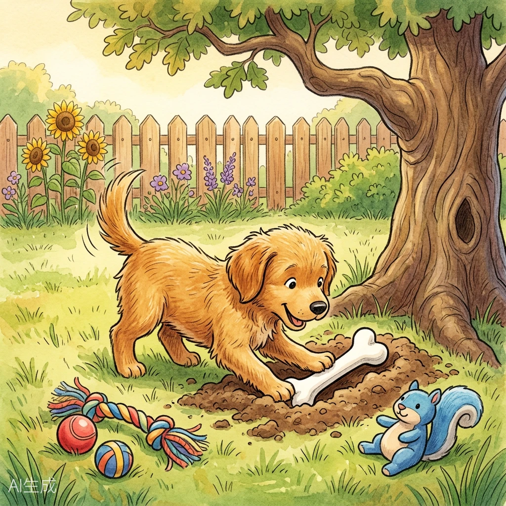
/images/assessment/hfw/variants/replacement-2026-06-05/hfw_1_25/hfw_workbook_hfw_1_25_one_s07.webp/images/assessment/hfw/variants/replacement-2026-06-05/hfw_1_25/hfw_workbook_hfw_1_25_one_s08.webp/images/assessment/hfw/variants/replacement-2026-06-05/hfw_1_25/hfw_workbook_hfw_1_25_one_s09.webp/images/assessment/hfw/variants/replacement-2026-06-05/hfw_1_25/hfw_workbook_hfw_1_25_one_s10.webp/images/assessment/hfw/variants/replacement-2026-06-05/hfw_1_25/hfw_workbook_hfw_1_25_one_s11.webp/images/assessment/hfw/variants/replacement-2026-06-05/hfw_1_25/hfw_workbook_hfw_1_25_one_s12.webp/images/assessment/hfw/variants/replacement-2026-06-05/hfw_1_25/hfw_workbook_hfw_1_25_one_s13.webp/images/assessment/hfw/variants/replacement-2026-06-05/hfw_1_25/hfw_workbook_hfw_1_25_one_s14.webp/images/assessment/hfw/variants/replacement-2026-06-05/hfw_1_25/hfw_workbook_hfw_1_25_one_s15.webp/images/assessment/hfw/variants/replacement-2026-06-05/hfw_1_25/hfw_workbook_hfw_1_25_one_s16.webp/images/assessment/hfw/variants/replacement-2026-06-05/hfw_1_25/hfw_workbook_hfw_1_25_one_s17.webp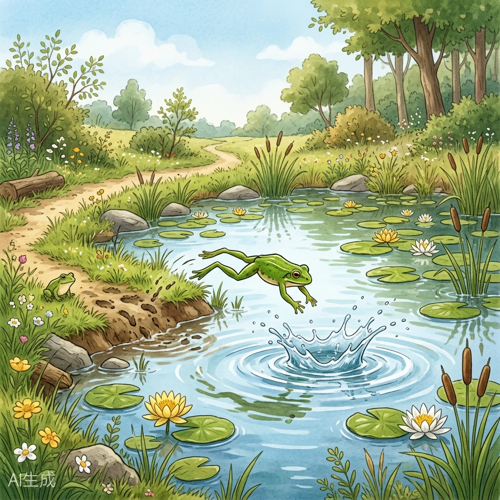
/images/assessment/hfw/variants/replacement-2026-06-05/hfw_1_25/hfw_workbook_hfw_1_25_one_s18.webp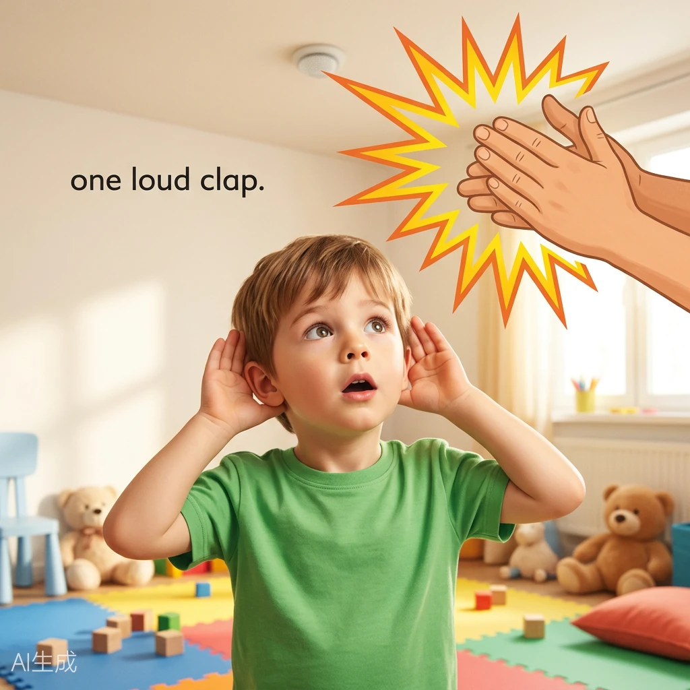
/images/assessment/hfw/variants/replacement-2026-06-05/hfw_1_25/hfw_workbook_hfw_1_25_one_s19.webp/images/assessment/hfw/variants/replacement-2026-06-05/hfw_1_25/hfw_workbook_hfw_1_25_one_s20.webp/images/assessment/hfw/variants/replacement-2026-06-05/hfw_1_25/hfw_workbook_hfw_1_25_said_s01.webp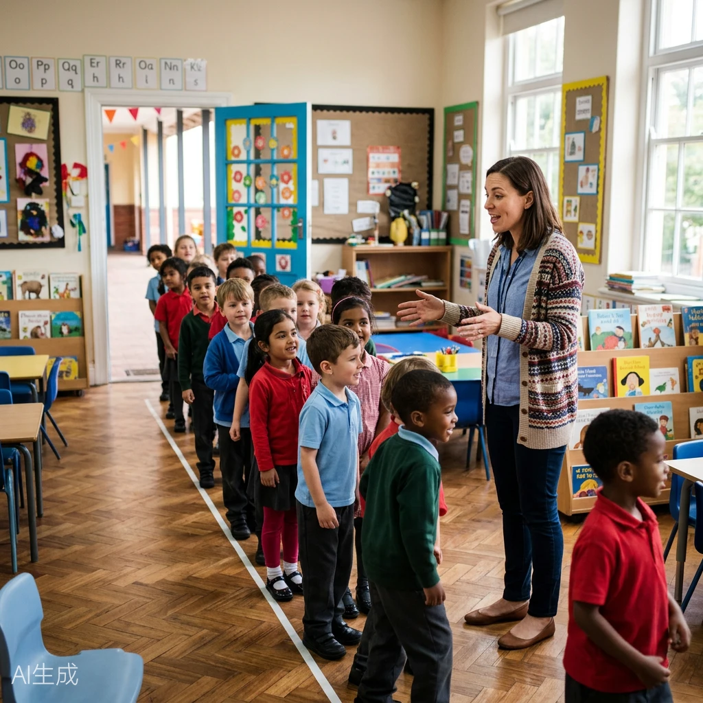
/images/assessment/hfw/variants/replacement-2026-06-05/hfw_1_25/hfw_workbook_hfw_1_25_said_s02.webp/images/assessment/hfw/variants/replacement-2026-06-05/hfw_1_25/hfw_workbook_hfw_1_25_said_s03.webp/images/assessment/hfw/variants/replacement-2026-06-05/hfw_1_25/hfw_workbook_hfw_1_25_said_s04.webp/images/assessment/hfw/variants/replacement-2026-06-05/hfw_1_25/hfw_workbook_hfw_1_25_said_s05.webp/images/assessment/hfw/variants/replacement-2026-06-05/hfw_1_25/hfw_workbook_hfw_1_25_said_s06.webp/images/assessment/hfw/variants/replacement-2026-06-05/hfw_1_25/hfw_workbook_hfw_1_25_said_s07.webp/images/assessment/hfw/variants/replacement-2026-06-05/hfw_1_25/hfw_workbook_hfw_1_25_said_s08.webp/images/assessment/hfw/variants/replacement-2026-06-05/hfw_1_25/hfw_workbook_hfw_1_25_said_s09.webp/images/assessment/hfw/variants/replacement-2026-06-05/hfw_1_25/hfw_workbook_hfw_1_25_said_s10.webp/images/assessment/hfw/variants/replacement-2026-06-05/hfw_1_25/hfw_workbook_hfw_1_25_said_s11.webp/images/assessment/hfw/variants/replacement-2026-06-05/hfw_1_25/hfw_workbook_hfw_1_25_said_s12.webp/images/assessment/hfw/variants/replacement-2026-06-05/hfw_1_25/hfw_workbook_hfw_1_25_said_s13.webp/images/assessment/hfw/variants/replacement-2026-06-05/hfw_1_25/hfw_workbook_hfw_1_25_said_s14.webp/images/assessment/hfw/variants/replacement-2026-06-05/hfw_1_25/hfw_workbook_hfw_1_25_said_s15.webp/images/assessment/hfw/variants/replacement-2026-06-05/hfw_1_25/hfw_workbook_hfw_1_25_said_s16.webp/images/assessment/hfw/variants/replacement-2026-06-05/hfw_1_25/hfw_workbook_hfw_1_25_said_s17.webp/images/assessment/hfw/variants/replacement-2026-06-05/hfw_1_25/hfw_workbook_hfw_1_25_said_s18.webp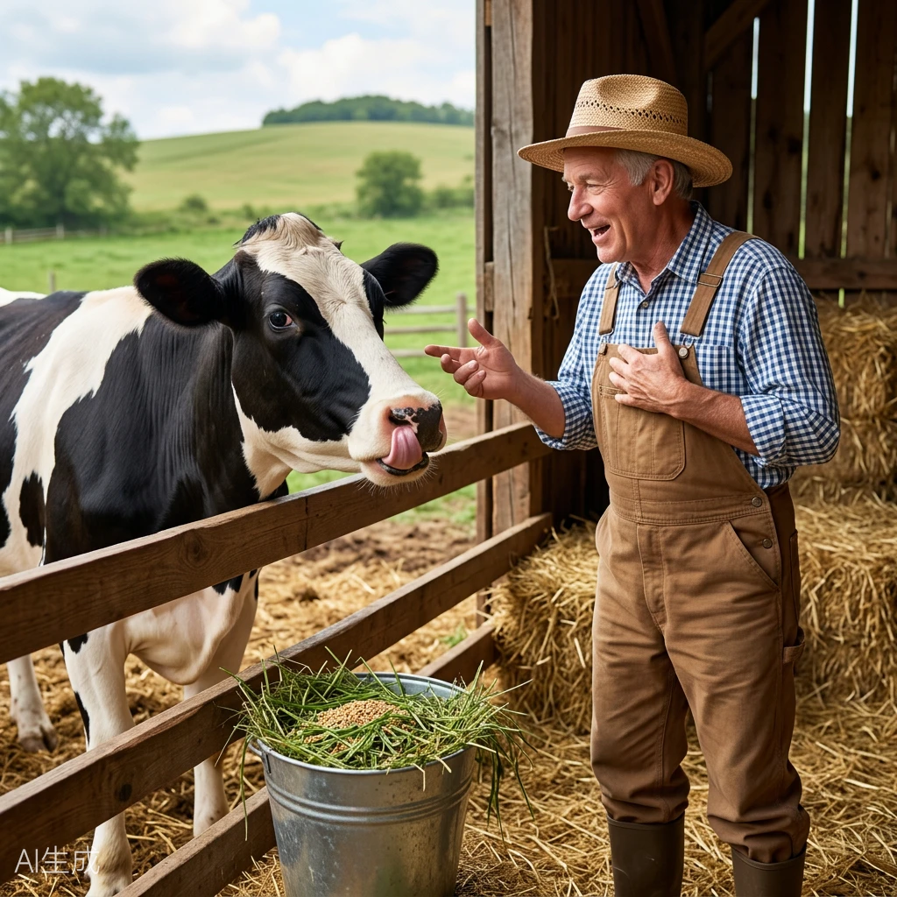
/images/assessment/hfw/variants/replacement-2026-06-05/hfw_1_25/hfw_workbook_hfw_1_25_said_s19.webp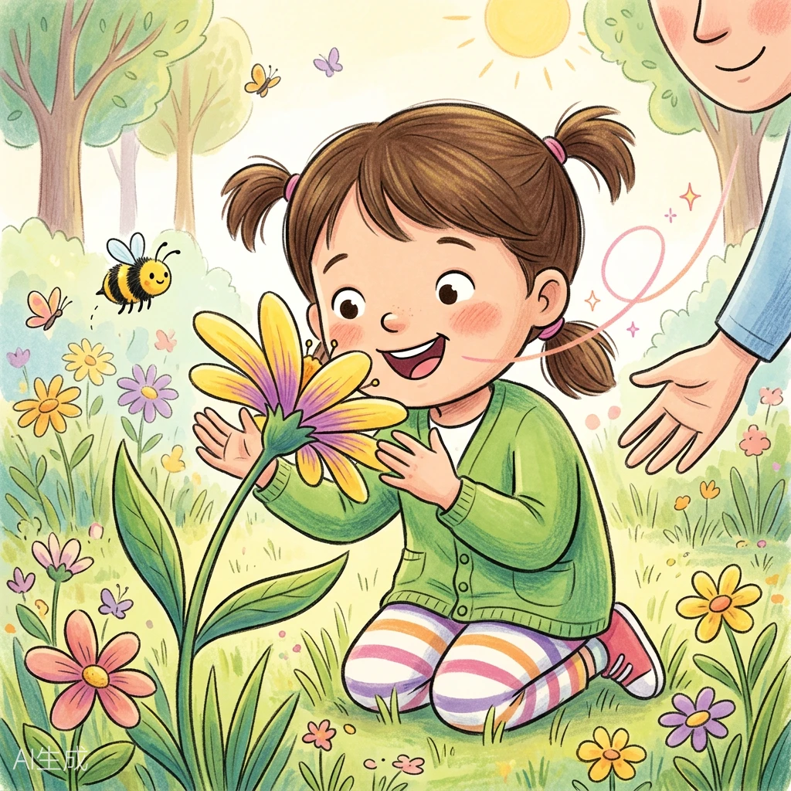
/images/assessment/hfw/variants/replacement-2026-06-05/hfw_1_25/hfw_workbook_hfw_1_25_said_s20.webp/images/assessment/hfw/variants/replacement-2026-06-05/hfw_1_25/hfw_workbook_hfw_1_25_see_s01.webp/images/assessment/hfw/variants/replacement-2026-06-05/hfw_1_25/hfw_workbook_hfw_1_25_see_s02.webp/images/assessment/hfw/variants/replacement-2026-06-05/hfw_1_25/hfw_workbook_hfw_1_25_see_s03.webp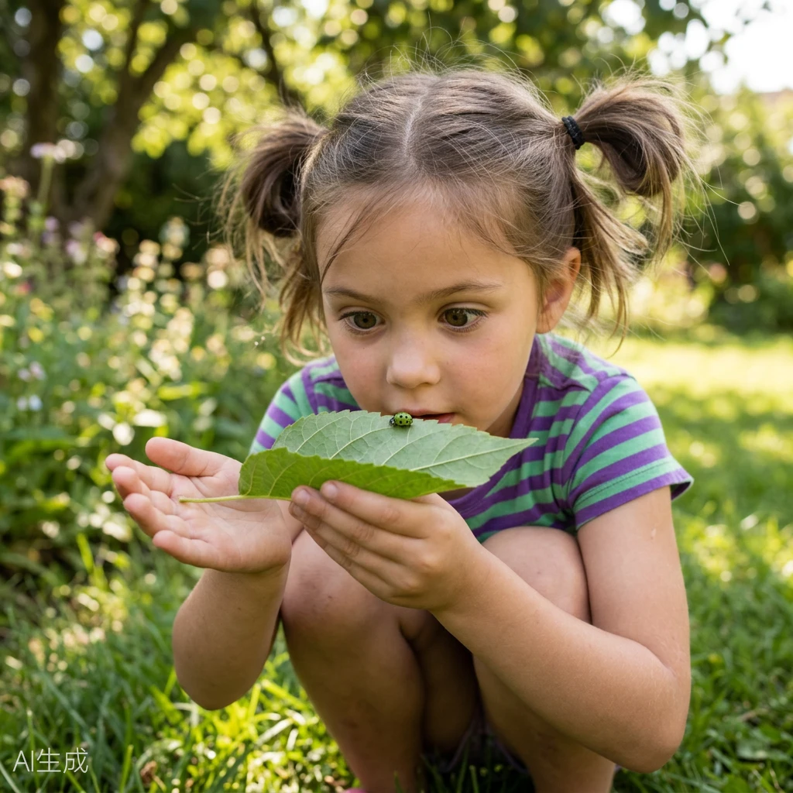
/images/assessment/hfw/variants/replacement-2026-06-05/hfw_1_25/hfw_workbook_hfw_1_25_see_s04.webp/images/assessment/hfw/variants/replacement-2026-06-05/hfw_1_25/hfw_workbook_hfw_1_25_see_s05.webp/images/assessment/hfw/variants/replacement-2026-06-05/hfw_1_25/hfw_workbook_hfw_1_25_see_s06.webp/images/assessment/hfw/variants/replacement-2026-06-05/hfw_1_25/hfw_workbook_hfw_1_25_see_s07.webp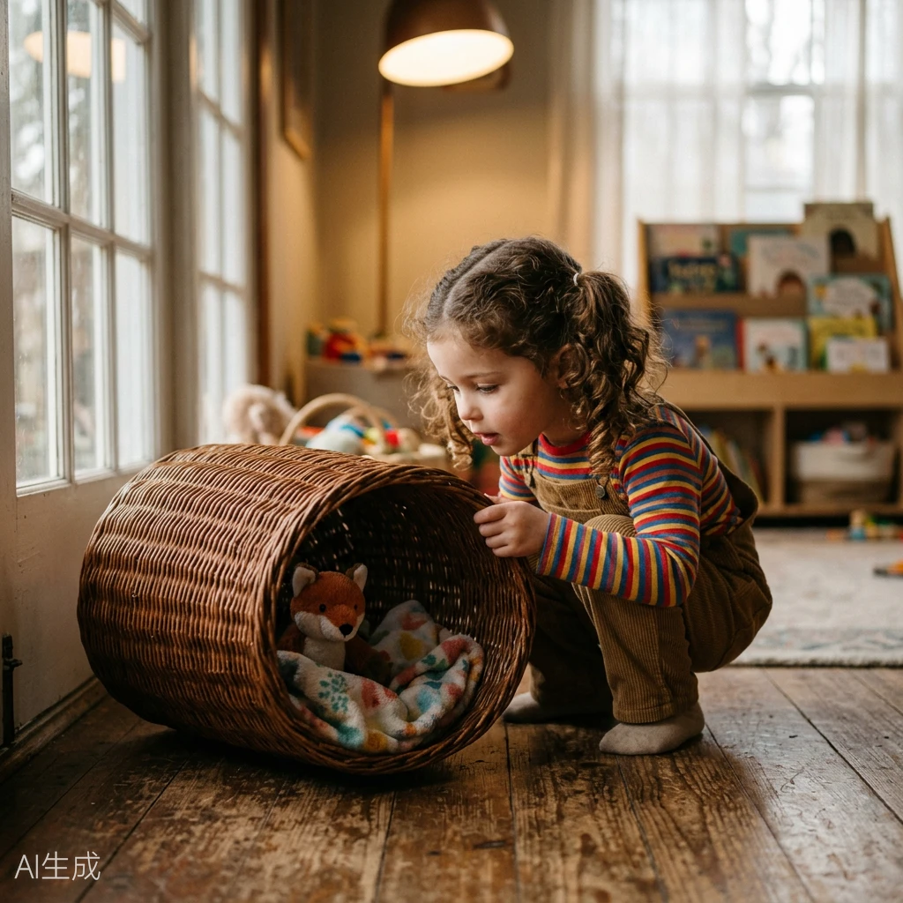
/images/assessment/hfw/variants/replacement-2026-06-05/hfw_1_25/hfw_workbook_hfw_1_25_see_s08.webp/images/assessment/hfw/variants/replacement-2026-06-05/hfw_1_25/hfw_workbook_hfw_1_25_see_s09.webp/images/assessment/hfw/variants/replacement-2026-06-05/hfw_1_25/hfw_workbook_hfw_1_25_see_s10.webp/images/assessment/hfw/variants/replacement-2026-06-05/hfw_1_25/hfw_workbook_hfw_1_25_see_s11.webp/images/assessment/hfw/variants/replacement-2026-06-05/hfw_1_25/hfw_workbook_hfw_1_25_see_s12.webp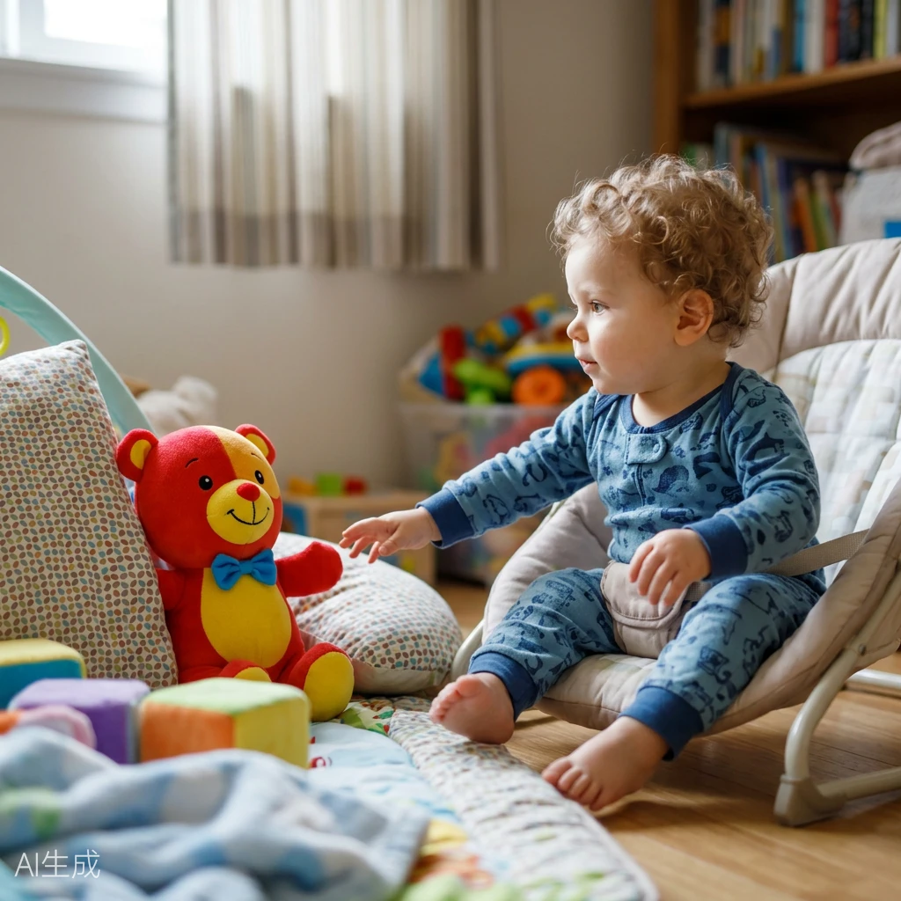
/images/assessment/hfw/variants/replacement-2026-06-05/hfw_1_25/hfw_workbook_hfw_1_25_see_s13.webp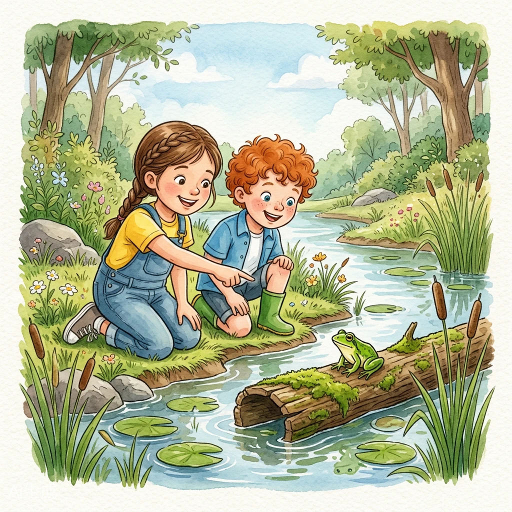
/images/assessment/hfw/variants/replacement-2026-06-05/hfw_1_25/hfw_workbook_hfw_1_25_see_s14.webp/images/assessment/hfw/variants/replacement-2026-06-05/hfw_1_25/hfw_workbook_hfw_1_25_see_s15.webp/images/assessment/hfw/variants/replacement-2026-06-05/hfw_1_25/hfw_workbook_hfw_1_25_see_s16.webp/images/assessment/hfw/variants/replacement-2026-06-05/hfw_1_25/hfw_workbook_hfw_1_25_see_s17.webp/images/assessment/hfw/variants/replacement-2026-06-05/hfw_1_25/hfw_workbook_hfw_1_25_see_s18.webp/images/assessment/hfw/variants/replacement-2026-06-05/hfw_1_25/hfw_workbook_hfw_1_25_see_s19.webp/images/assessment/hfw/variants/replacement-2026-06-05/hfw_1_25/hfw_workbook_hfw_1_25_see_s20.webp/images/assessment/hfw/variants/replacement-2026-06-05/hfw_1_25/hfw_workbook_hfw_1_25_to_s01.webp/images/assessment/hfw/variants/replacement-2026-06-05/hfw_1_25/hfw_workbook_hfw_1_25_to_s02.webp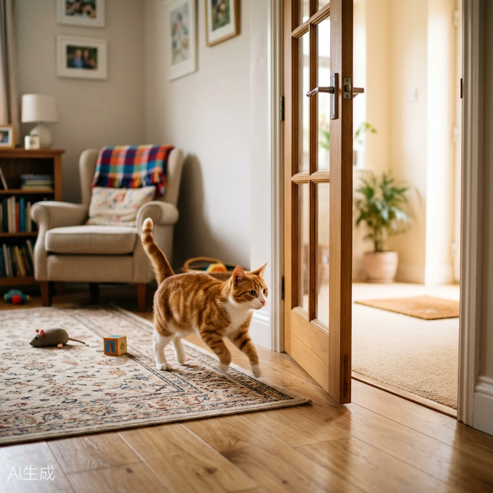
/images/assessment/hfw/variants/replacement-2026-06-05/hfw_1_25/hfw_workbook_hfw_1_25_to_s03.webp/images/assessment/hfw/variants/replacement-2026-06-05/hfw_1_25/hfw_workbook_hfw_1_25_to_s04.webp/images/assessment/hfw/variants/replacement-2026-06-05/hfw_1_25/hfw_workbook_hfw_1_25_to_s05.webp/images/assessment/hfw/variants/replacement-2026-06-05/hfw_1_25/hfw_workbook_hfw_1_25_to_s06.webp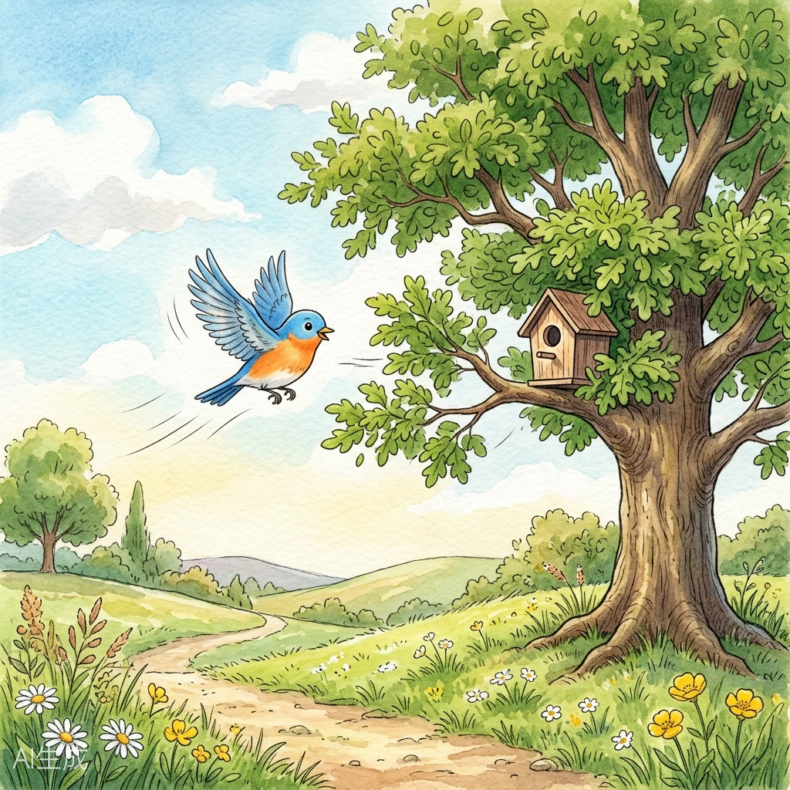
/images/assessment/hfw/variants/replacement-2026-06-05/hfw_1_25/hfw_workbook_hfw_1_25_to_s07.webp/images/assessment/hfw/variants/replacement-2026-06-05/hfw_1_25/hfw_workbook_hfw_1_25_to_s08.webp/images/assessment/hfw/variants/replacement-2026-06-05/hfw_1_25/hfw_workbook_hfw_1_25_to_s09.webp/images/assessment/hfw/variants/replacement-2026-06-05/hfw_1_25/hfw_workbook_hfw_1_25_to_s10.webp/images/assessment/hfw/variants/replacement-2026-06-05/hfw_1_25/hfw_workbook_hfw_1_25_to_s11.webp/images/assessment/hfw/variants/replacement-2026-06-05/hfw_1_25/hfw_workbook_hfw_1_25_to_s12.webp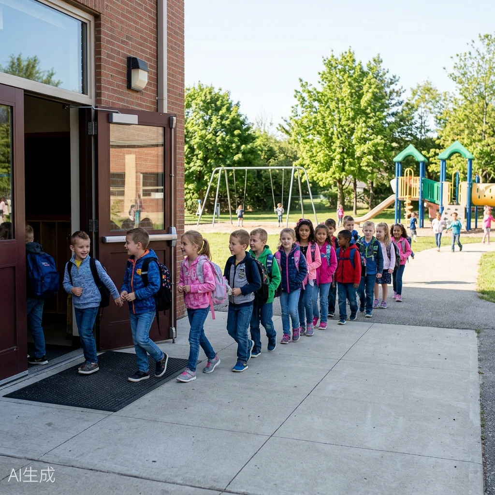
/images/assessment/hfw/variants/replacement-2026-06-05/hfw_1_25/hfw_workbook_hfw_1_25_to_s13.webp/images/assessment/hfw/variants/replacement-2026-06-05/hfw_1_25/hfw_workbook_hfw_1_25_to_s14.webp/images/assessment/hfw/variants/replacement-2026-06-05/hfw_1_25/hfw_workbook_hfw_1_25_to_s15.webp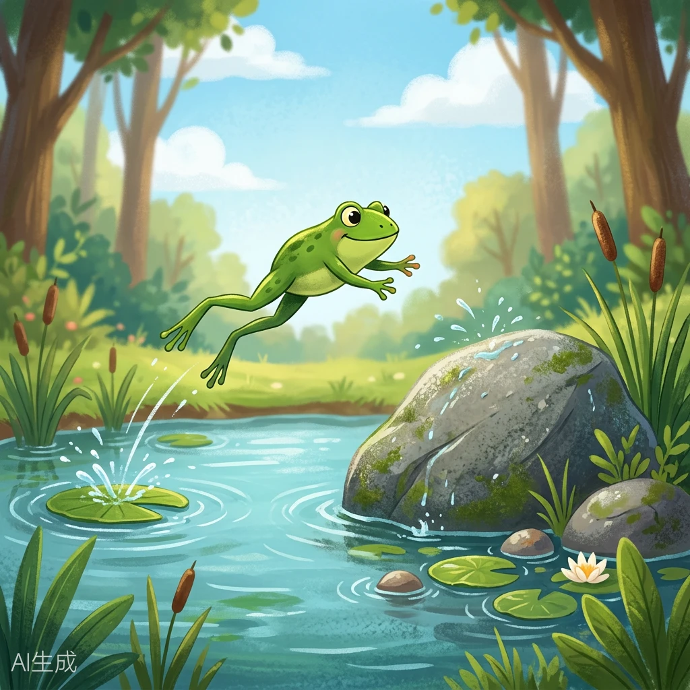
/images/assessment/hfw/variants/replacement-2026-06-05/hfw_1_25/hfw_workbook_hfw_1_25_to_s16.webp/images/assessment/hfw/variants/replacement-2026-06-05/hfw_1_25/hfw_workbook_hfw_1_25_to_s17.webp/images/assessment/hfw/variants/replacement-2026-06-05/hfw_1_25/hfw_workbook_hfw_1_25_to_s18.webp/images/assessment/hfw/variants/replacement-2026-06-05/hfw_1_25/hfw_workbook_hfw_1_25_to_s19.webp/images/assessment/hfw/variants/replacement-2026-06-05/hfw_1_25/hfw_workbook_hfw_1_25_to_s20.webp/images/assessment/hfw/variants/replacement-2026-06-05/hfw_1_25/hfw_workbook_hfw_1_25_up_s01.webp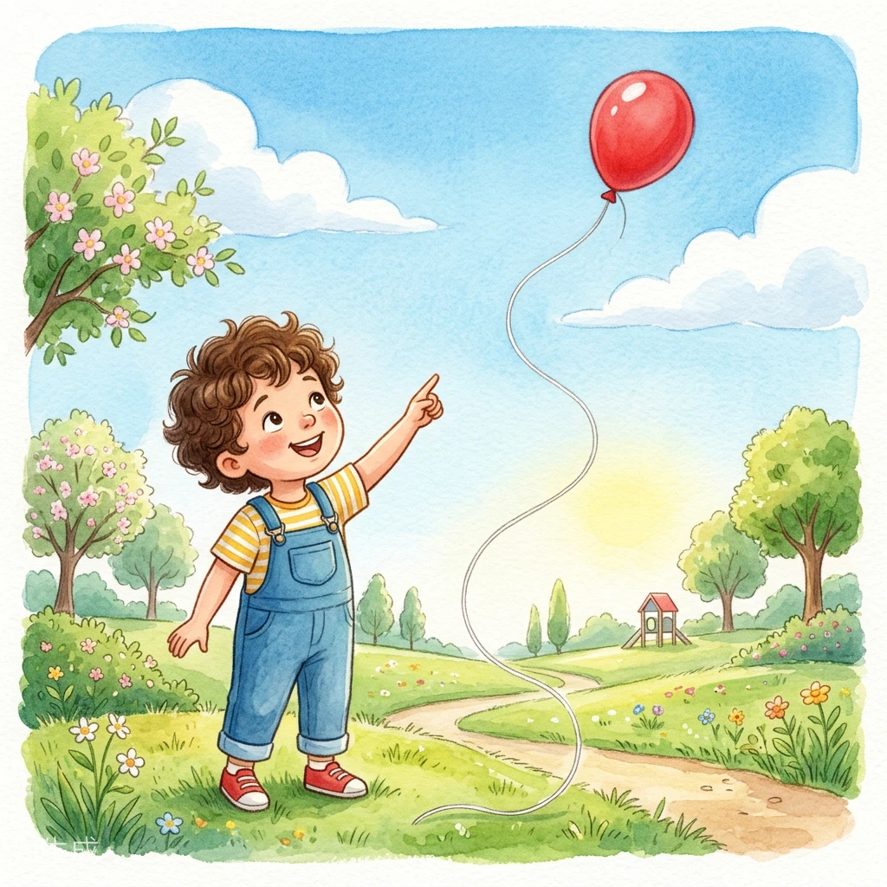
/images/assessment/hfw/variants/replacement-2026-06-05/hfw_1_25/hfw_workbook_hfw_1_25_up_s02.webp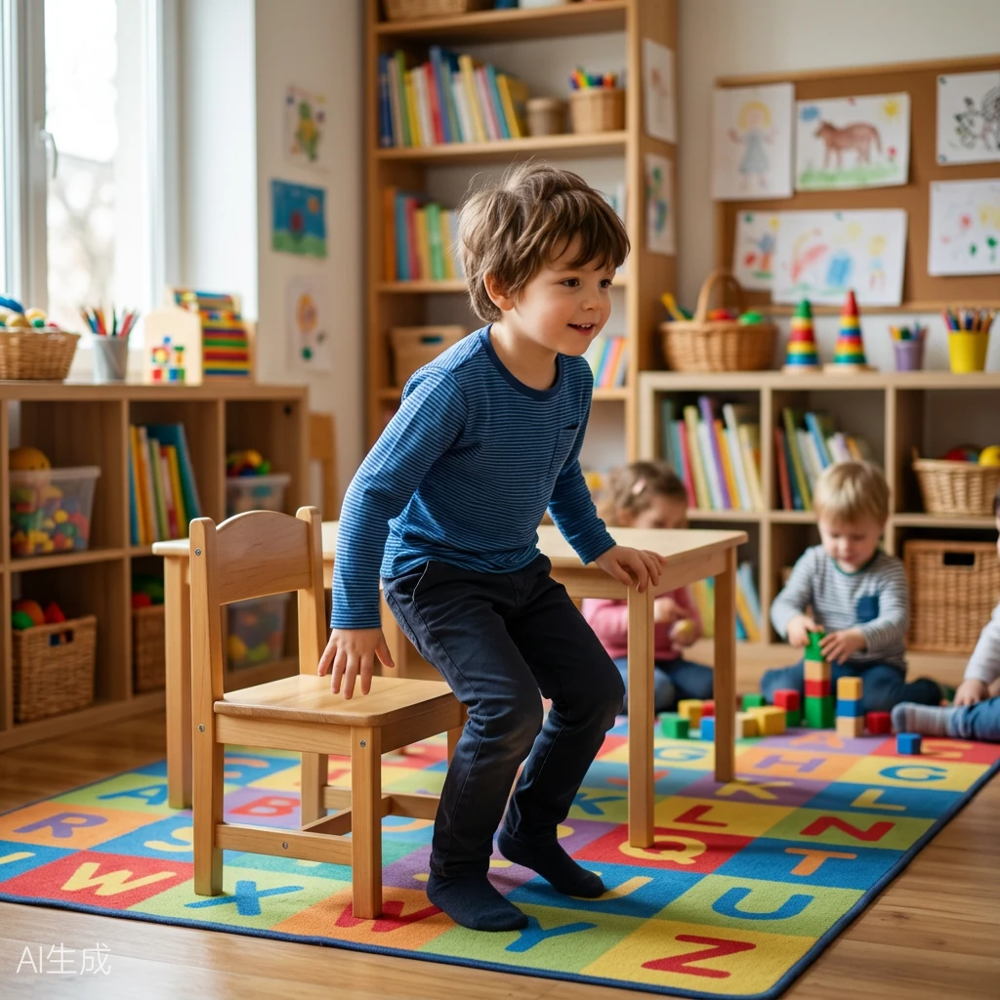
/images/assessment/hfw/variants/replacement-2026-06-05/hfw_1_25/hfw_workbook_hfw_1_25_up_s03.webp/images/assessment/hfw/variants/replacement-2026-06-05/hfw_1_25/hfw_workbook_hfw_1_25_up_s04.webp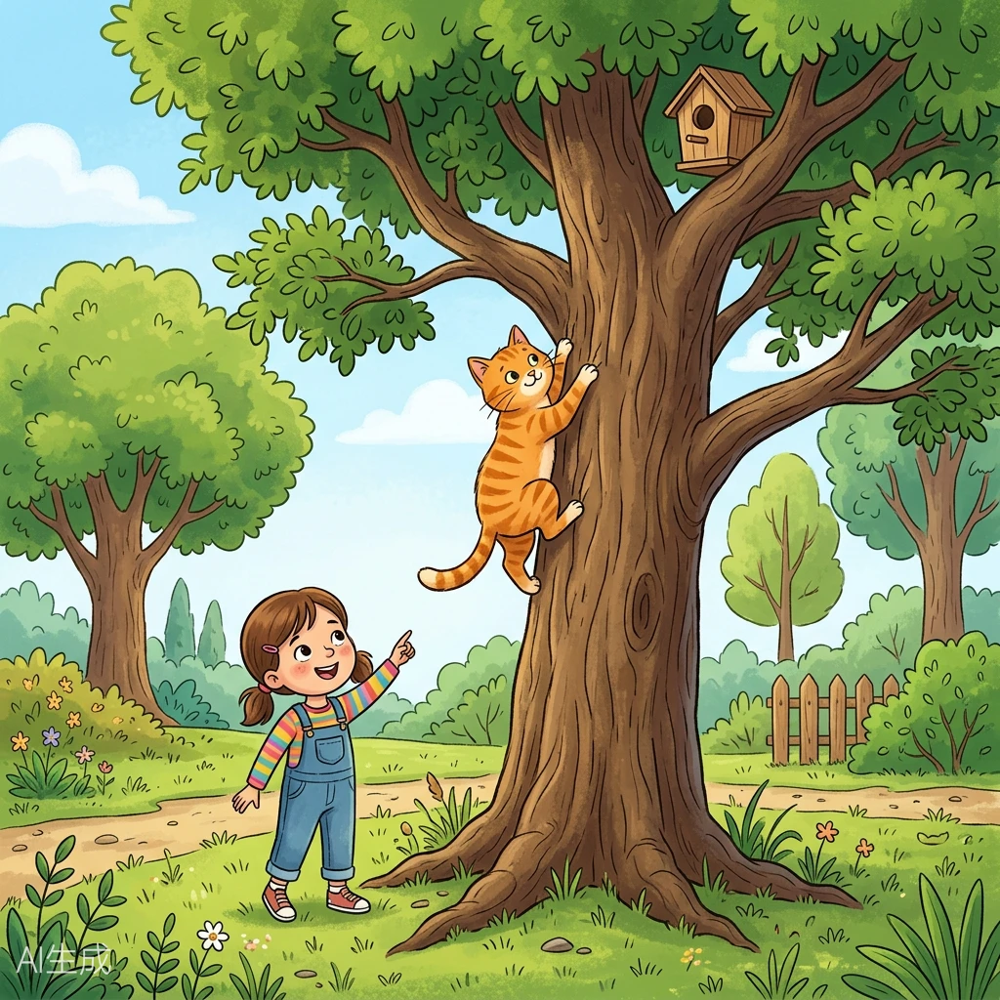
/images/assessment/hfw/variants/replacement-2026-06-05/hfw_1_25/hfw_workbook_hfw_1_25_up_s05.webp